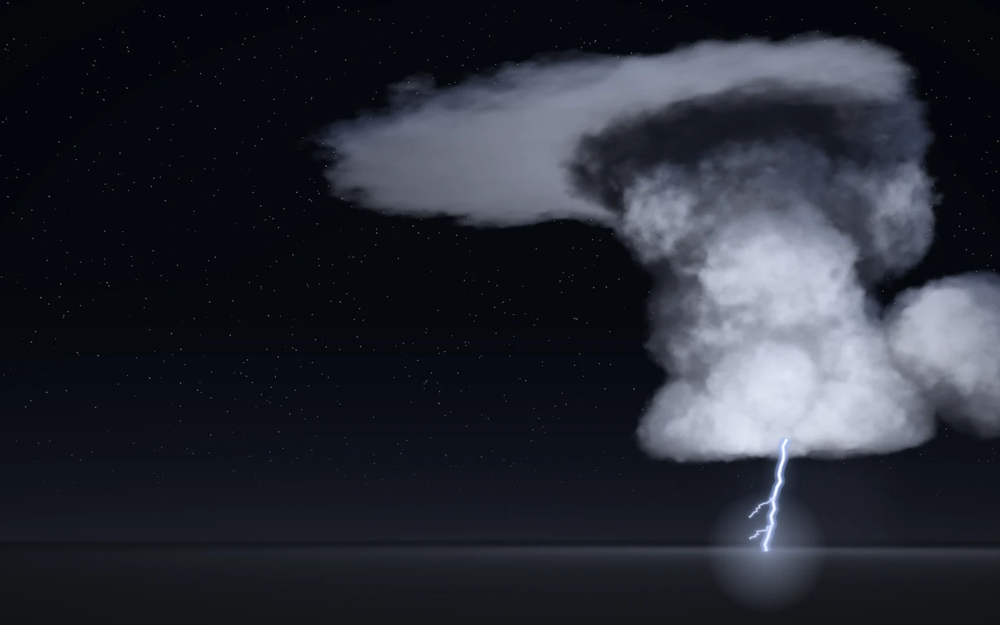
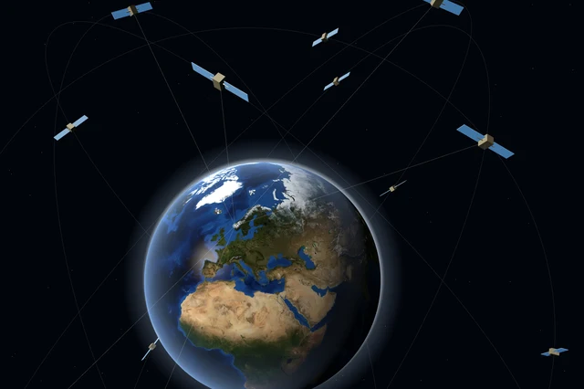
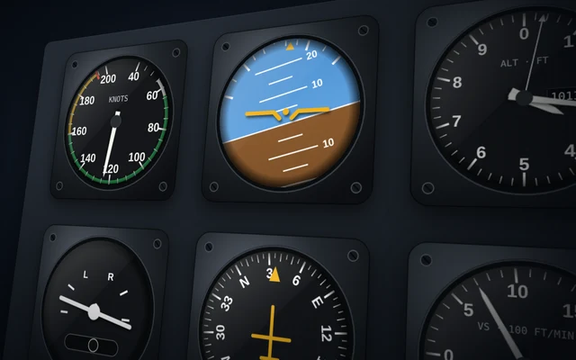
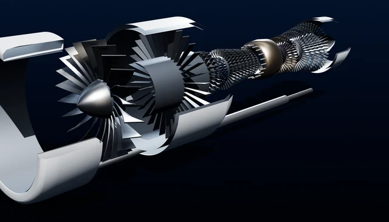
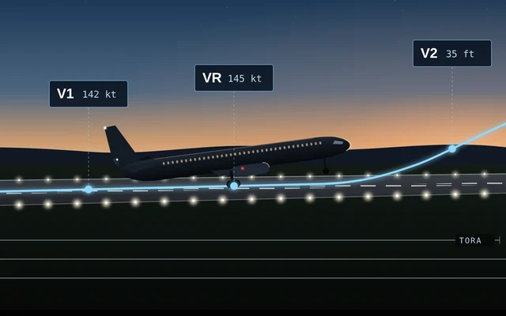

Virtual Labs
The theory behind flying, as models you can move. Seven subject areas, every lab built the same way.
- 1Key conceptsThe basics first, step by step
- 2The modelChange it and watch what happens
- 3Try itShort tasks in the model
- 4Test yourselfKey points and a short quiz

Area 01 · Start hereAerodynamicsHow a wing makes lift, from angle of attack to Mach.

Area 02MeteorologyPressure and wind first, then the weather that shapes every flight.

NavigationWind triangle to ILS.

InstrumentsWhat they measure.

SystemsEngines and systems.

PerformanceV1, runway and fuel.
Subject areas
Each area starts with its most basic lab and builds from there. The numbers come from illustrative teaching models; the principles apply to every aircraft.
More
Outside the seven areas.
Teaching models for understanding, not a question bank. Follow the AIP, the flight manual and your operator’s procedures for numbers you fly with.